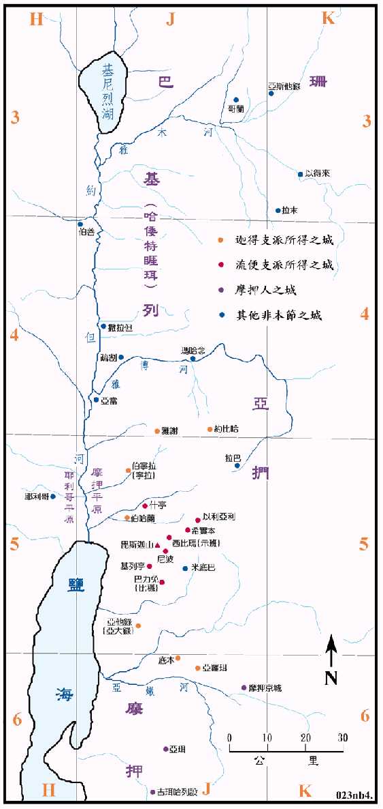

1407BC

行动线说明
| 圣经 | 说明 |
|---|---|
| 民22:2-24:25 | 摩押王请巴勒咒诅以色列人。 |
| 民25章 | 以色列人在什亭行淫乱，引发了瘟疫。 |
| 民26章 | 点数以色列人。 |
| 民31:1-12 | 以色列人攻打米甸人。 |
| 民32:1-42 | 分地给两个半支派。 |
摩押人远至幼发拉抵河边去请巴兰回来咒诅以色列人，可见当时两地的交通频繁，消息流传之广。从巴兰所作之歌中，也可以看出当时的人对当时的世界有很正确和丰富的知识。
当时亚嫩河之北是被亚摩利王西宏所据，但居民仍以摩押人为主，同时也有很多的米甸人散居其间，而且是摩押地很有权势的民族。以色列人奉命攻击米甸人一节，并没有说明细节，也无地名之记载，所以可想见的是，除了攻击摩押地的米甸人之外，很有可能也直捣其老巢，就是阿卡巴湾的东岸的地区。
流便和迦得要求分地业，并自行建造城邑，但从图上可以看见，两支派的城邑相互混杂，并无规则的界线，但是在后来重新分地时，曾作交换，就有了完整的疆域，请参看<书图五>。
玛拿西半支派的地业是在基列，他们建了二、三十个村庄，统称为哈倭特睚珥。另外有一个城原名基纳，后改名叫挪巴，是在巴珊的极东地区。